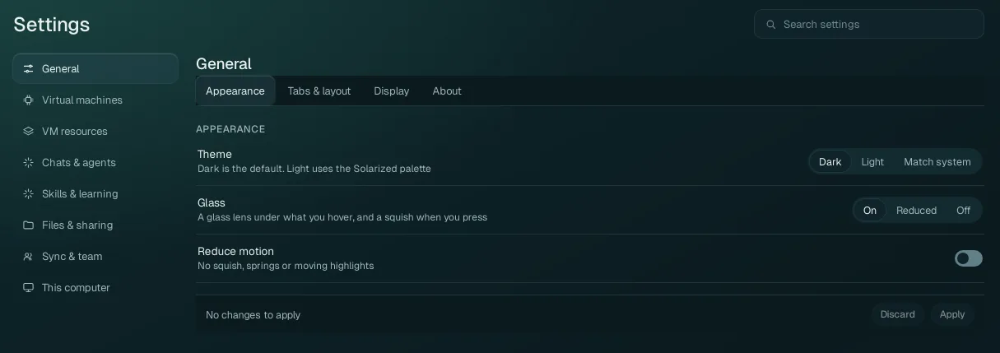
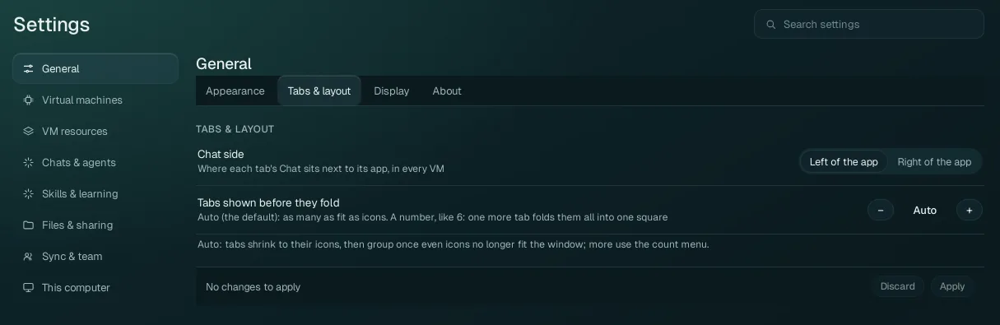
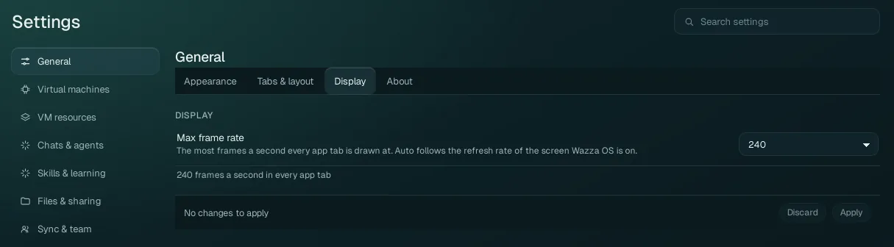
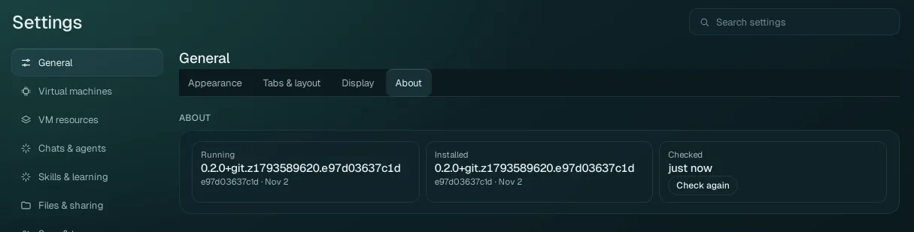

Settings › General
How Wazza OS looks (theme, glass, motion), where each tab's Chat sits, how many tabs show before they fold, the frame rate of app tabs, and which version runs.
Open Settings and find an option#
Click Settings in the Home menu on the left (open Home with the + at the end of the tab strip if it is not shown). Settings opens in the Home tab.
Pick a page in the list on the left: General, Virtual machines, VM resources, Chats & agents, Skills & learning, Files & sharing, Sync & team, This computer. In a narrow window the list becomes a drop-down next to the title.
Each page has tabs (here Appearance, Tabs & layout, Display, About); one tab shows at a time.
Or type in Search settings (top right): every row of every page that matches your words shows, whatever its page and tab.
Apply and Discard#
On most tabs a change is held, not applied: the control shows your new value, its row is marked Not applied, and the bar at the bottom of the tab counts the changes. Apply applies every held change of the tab together and says what it applied; Discard puts them back. If you leave a tab or a page with held changes, Wazza OS asks Apply, Discard or Stay first. With nothing held, the bar says No changes to apply.
A few sections have their own button instead (VM resources' Save and apply, New Chats' Use for new Chats, Time limits' Save, the VM list), and text fields have their own button next to them. A change made by an agent or by the command line is never held: it applies at once.
Appearance#

| Option | Values | What it does |
|---|---|---|
| Theme | Dark (default), Light, Match system | Dark is Wazza OS's dark petrol. Light uses the Solarized palette (cream background, dark blue text). Match system follows your desktop's light or dark preference and changes with it. The whole window switches in one step. |
| Glass | On (default), Reduced, Off | On: a glass lens follows what you hover (menu items, tabs, app cards) and a button squishes slightly when you press it. Reduced: the lens without its blur, and the selected item drawn flat (lighter on a slow graphics card). Off: plain darker highlights, no lens. |
| Reduce motion | Off (default) / On | On: no squish, no springs, no moving highlights anywhere in Wazza OS. Use it if motion bothers you or on a slow computer. When your desktop itself asks for reduced motion, Wazza OS follows it too. |
Tabs & layout#

| Option | Values | What it does |
|---|---|---|
| Chat side | Left of the app (default), Right of the app | Where each tab's Chat sits next to its app, in every VM. The divider between them can still be dragged in each tab. |
| Tabs shown before they fold | Auto (default), or a number from 1 to 99 | Auto: tabs shrink to their icons when the strip is full, then group once even the icons no longer fit; the others are in the count square's menu. A number (for example 6): when you open one tab more, all tabs fold into one square that shows how many there are; click it to see and pick any tab. Use − and + or type the number. |
Display#

| Option | Values | What it does |
|---|---|---|
| Max frame rate | Auto, 60, 75, 90, 120, 144, 165, 240 (a new installation's value) | The most frames a second every app tab is drawn at (the VM's picture in the Wazza OS window). Auto follows the refresh rate of the screen the Wazza OS window is on (and is read again when you move the window to another screen). A choice applies at once to every app tab and is kept for the next start. The line under it says the rate in effect. A lower rate uses less CPU and GPU on your computer; it does not change how fast apps run in the VM. |
When an app tab's desktop cannot start, a recovery card for that tab appears in this section (Guest desktop startup failed, with Retry desktop startup). It is only there while the problem lasts; see Troubleshooting.
About#

| Tile | What it shows |
|---|---|
| Running | The version of Wazza OS that runs now, its build (the 12-character code) and its date. |
| Installed | The version installed on your computer. It differs from Running after an update was installed but Wazza OS was not restarted yet: quit and start Wazza OS to run the new one. |
| Checked | When Wazza OS last read both. Check again reads them now. |
The same two versions in a terminal: wazza --version (see The command line).
To look for a newer version, use the Update page.